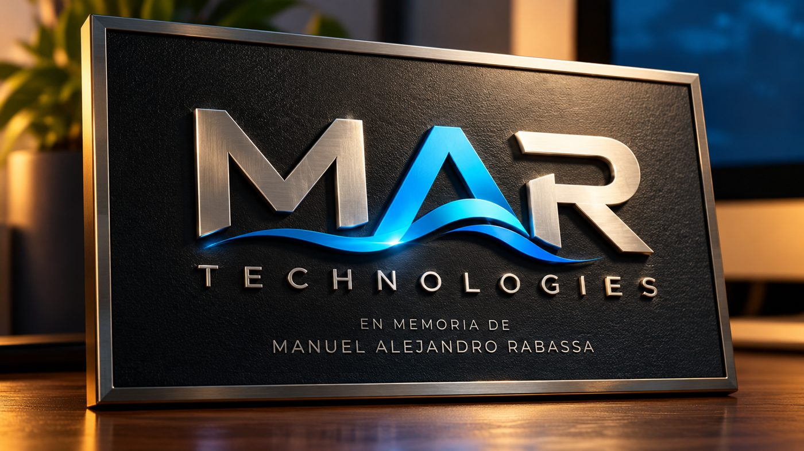
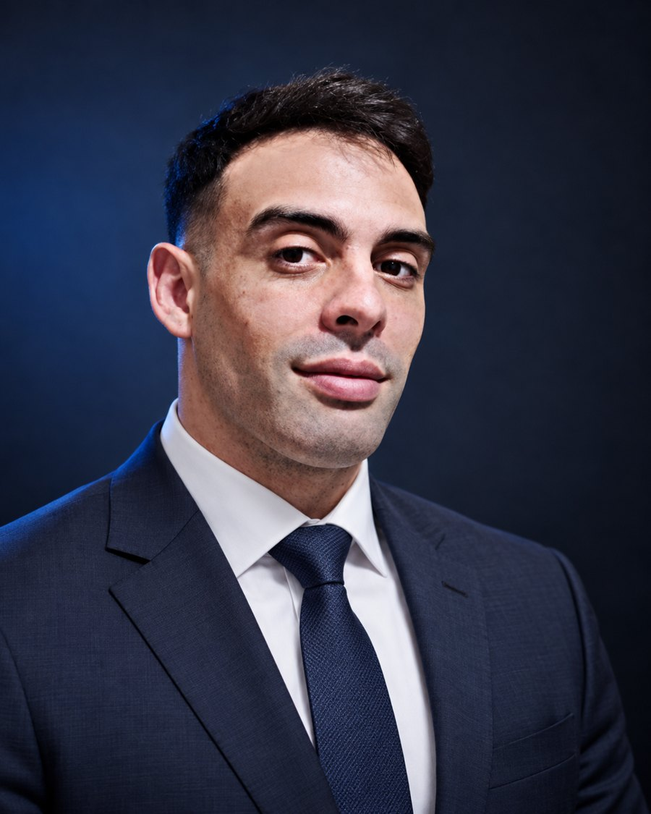

Mirar y aprender
«No, no. Vos mirá y aprendé.» Observar las manos de quien sabe sigue siendo mi manera de aprender.
LO APRENDÍ DE MI PAPÁ
// NUESTRA HISTORIA

MAR Technologies nace de la decisión de construir una empresa tecnológica propia, a partir de más de veinte años de experiencia en mecánica, diagnóstico y resolución de problemas, y del camino que llevó a su fundador a programar aplicaciones para necesidades concretas.
Su nombre es un homenaje a Manuel Alejandro Rabassa, Manolo, padre del fundador. Nacido en Barcelona, es recordado por su creatividad, su paciencia, su sensibilidad, su cariño y su capacidad para dibujar y contar historias.
Esa inspiración guía el proyecto: transformar la creatividad en proyectos, la curiosidad en conocimiento y las ideas en soluciones concretas.
Crear con imaginación.
Trabajar con paciencia.
Construir con humanidad.
Joel Rabassa · Fundador
BARCELONA · DONDE NACIÓ MANOLO
La creatividad nos inspira.
La tecnología nos impulsa.

// QUIÉN ESTÁ DETRÁS
Fundador de MAR Technologies
Más de veinte años en mecánica, diagnóstico y resolución de problemas le enseñaron a entender cómo funciona una operación real. La programación le dio la forma de mejorarla.
Hoy combina esa experiencia con software, automatización e inteligencia artificial para construir herramientas útiles para empresas y emprendedores.
Hablemos de tu proyecto →// POR QUÉ LO HAGO
MI LEMA
«No, no. Vos mirá y aprendé.» Observar las manos de quien sabe sigue siendo mi manera de aprender.
LO APRENDÍ DE MI PAPÁ
Cada tarea lleva tiempo y dedicación. Mirar lo que uno logró con sus propias manos da gusto y satisfacción.
LO APRENDÍ DE MI ABUELA
Transmitir lo que sé para ayudar a quienes lo necesitan, y devolverle tiempo a cada persona con la que trabajo.
LO QUE QUIERO DEJAR
“
Mis proyectos nacen de la necesidad de optimizar las tareas que demandan mucho tiempo, para poder aprovecharlo en otras cosas. Lo vivo todos los días en el taller y en la casa de repuestos.
La programación me dio la herramienta para resolverlo: unir la experiencia de trabajar con las manos con la posibilidad de crear soluciones digitales. Hoy, como padre, valoro todavía más el ejemplo de mi papá.
Valoro el tiempo y la dedicación que lleva cada tarea. Poder admirar cada trabajo realizado me da mucho gusto y satisfacción.
MAR lleva las iniciales de mi papá. Cada vez que termino un trabajo, están conmigo su voz diciéndome «vos mirá y aprendé» y la de mi abuela invitándome a mirar lo que logré.
Joel
MISIÓN
Diseñar y desarrollar soluciones tecnológicas accesibles, inteligentes y adaptadas a las necesidades reales de cada cliente, combinando conocimiento técnico, creatividad, automatización e inteligencia artificial.
VISIÓN
Construir una empresa tecnológica reconocida por transformar ideas y necesidades en productos digitales funcionales, escalables y confiables, para Argentina y Latinoamérica.
VALORES
Creatividad Compromiso Responsabilidad Aprendizaje continuo Innovación práctica Transparencia Cercanía